Vacances à Perros-Guirec du 12/04/2026 au 18/04/2026
Pendant ces vacances d’avril, nous sommes retournées à Perros-Guirec, sur la côte de granit rose en Bretagne, pour nous conforter dans notre idée de futur lieu de vie. Conclusion de l’affaire : c’est bien là-bas que l’on veut se poser.
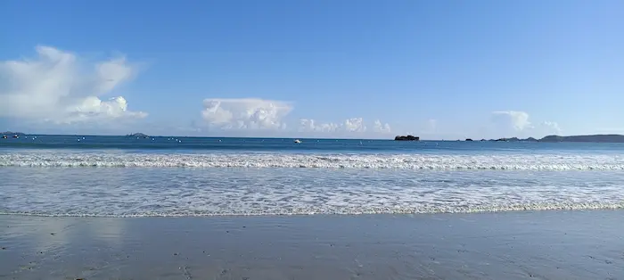
Concernant l’avenir
Avantages
Le cadre de vie, qui est excellent, avec la mer, les balades, le bon air, les températures clémentes (une semaine début avril sans jamais descendre en dessous de 11°C, même la nuit !), la végétation.
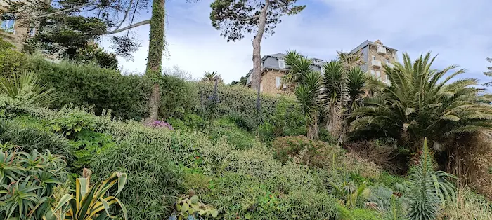
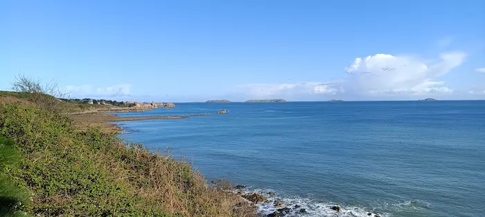
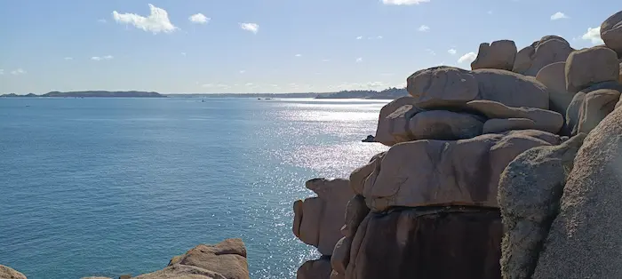
Les commodités qui sont présentes directement en ville, avec les multiples magasins, les marchés, le bus. Mais aussi avec la proximité de Lannion, plus grosse ville, avec tout ce qui pourrait manquer.
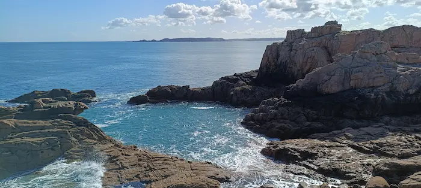
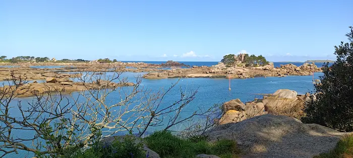
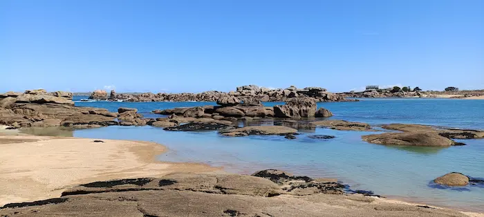
La proximité d’autres villes et plages intéressantes : Lannion, Trégastel, Trébeurden, Plouannec. Une heure de vélo ou le bus pour aller à Perros depuis Lannion !
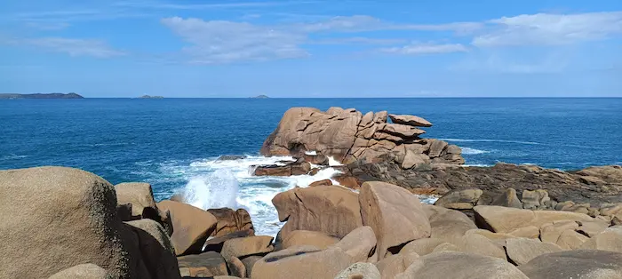
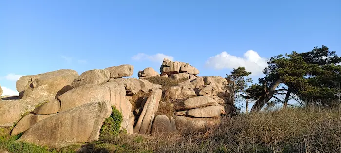
Inconvénients
Le prix de l’immobilier, carrément indécent.
La fréquentation touristique.
Le travail ? Pour l’instant, je ne sais pas trop. Aucune de mes démarches spontanées n’a encore abouti. Mais il faudra persévérer. Et au pire, on peut toujours se rabattre sur Lannion.
Concernant les vacances
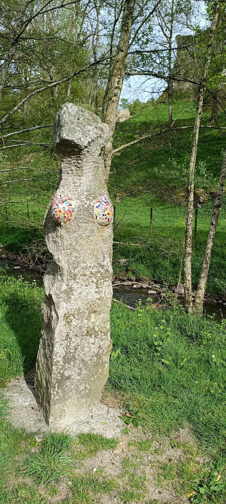
Avant d’arriver en Bretagne, nous avons fait une escale à Bressuire, dans Les Deux-Sèvres. Il y avait un beau château avec un grand parc. C’était sympa. On a vu des chèvres et des vaches qui ressemblaient à Appa le bison volant.
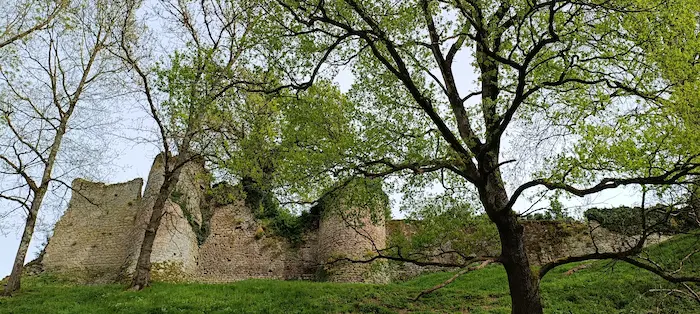
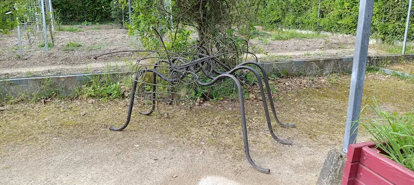
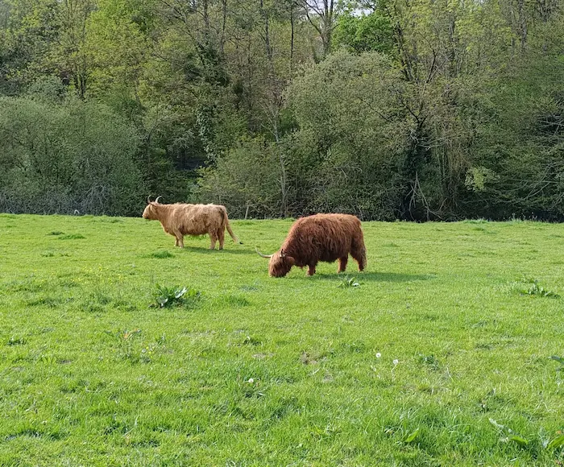
Puis à Perros-Guirec, on a pu faire de jolies balades, se baigner, flâner sur la plage, déguster des glaces, observer les étoiles depuis la plage, dessiner dans le sable. C’était juste parfait.
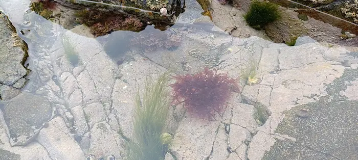
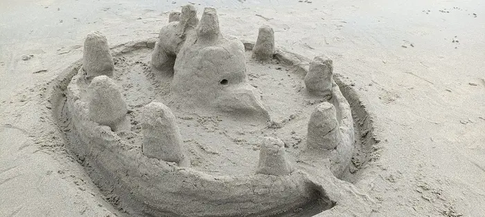
Évidemment, loger dans un appartement à deux pas de la plage était un plus considérable (même si l’appart en question laissait un peu à désirer). En camping, ça aurait été une autre affaire !
Ce que j’ai le plus aimé
Buller en regardant les vagues avancer, les reflets de la lumière sur l’eau, et manger une glace.
Voir les phares s’allumer, la nuit.
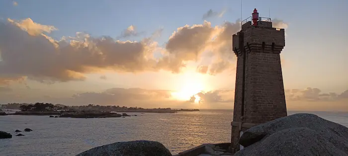
Et regarder la mer monter et les vagues se jeter sur le mur de l’esplanade.
Ce que j’ai le moins aimé
Repartir ! Mais ça, le lieu n’y est pour rien.
Ce qui était le moins bien, sur place, pendant ce séjour, je dirais que c’était de constater que tant de résidences étaient vides, fermées, alors que nous, on aurait bien aimé vivre dedans !
Les baies, quand la mer se retire. C’est beaucoup moins joli et ça pue le poisson !
Conclusion
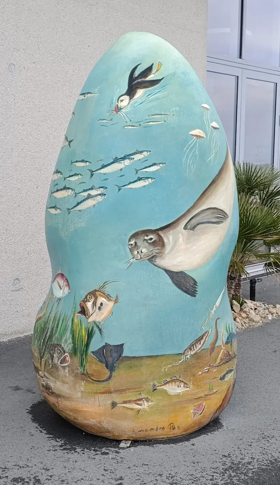
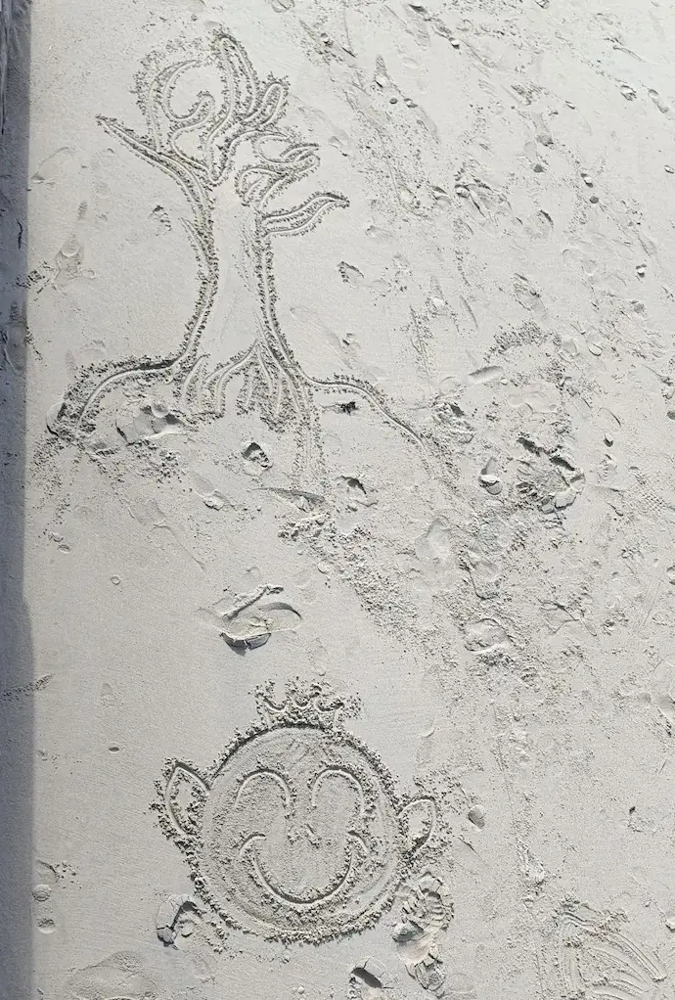
Nous sommes aussi retournées voir Paimpol et Trégastel, et c’était moins bien que dans nos souvenirs. Perros, c’est un coup de cœur.